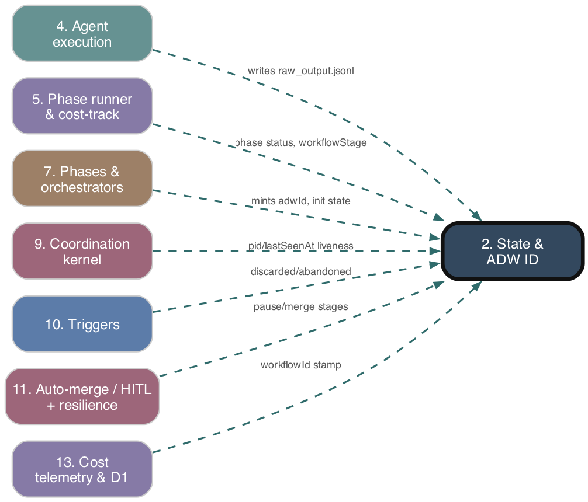

State & ADW ID
As-is reference. Ground truth: source code.

Purpose
The persistence substrate for ADW workflows. It mints the per-run identity (the adwId), owns the on-disk layout under agents/{adwId}/, and provides the read/write/merge helpers for both the top-level workflow state file (agents/{adwId}/state.json) and per-agent state files (agents/{adwId}/{agentName}/state.json). This file substrate is what enables phase chaining, resume/recovery, and out-of-band liveness queries across separate process invocations.
Responsibilities
- Generate a unique
adwIdper workflow run (random base36 + slug or timestamp). - Define and persist the top-level state schema (
pid,pidStartedAt,lastSeenAt,workflowStage,phases,repoIdentity,orchestratorScript, plan/branch/issue fields). - Atomic, merge-aware writes to the top-level state file; shallow-merge top-level fields, deep-merge the
phasesmap (per-entry, never clobbering siblings). - Per-agent state directory init, write/read/merge, execution-log append, raw JSON/JSONL output, parent-state traversal for nested agents.
- Helpers to locate the orchestrator's state directory for a given
adwIdand answer "is this run's process still alive?" (delegating the PID predicate toprocessLiveness). - Define the
WorkflowStageandPRReviewWorkflowStagetaxonomies,RecoveryState, and execution-status types.
Key Files
| Path | Role |
|---|---|
| --- | --- |
adws/core/adwId.ts |
generateAdwId(summary?) and slugify(text). |
| --- | --- |
adws/core/agentState.ts |
AgentStateManager class: per-agent + top-level state I/O, atomic write, merge semantics. |
| --- | --- |
adws/core/stateHelpers.ts |
findOrchestratorStatePath, isAgentProcessRunning, createExecutionState, completeExecution, deprecated isProcessAlive. |
| --- | --- |
adws/core/processLiveness.ts |
getProcessStartTime(pid), isProcessLive(pid, recordedStartTime) — PID-reuse-safe liveness. |
| --- | --- |
adws/core/orchestratorLib.ts |
deriveOrchestratorScript / orchestratorNamesForScript — name↔script mapping used to disambiguate orchestrator dirs. |
| --- | --- |
adws/types/agentTypes.ts |
AgentState, AgentExecutionState, PhaseExecutionState, RepoIdentity, AgentIdentifier, status types. |
| --- | --- |
adws/types/workflowTypes.ts |
WorkflowStage, PRReviewWorkflowStage, RecoveryState taxonomies. |
| --- | --- |
adws/types/dataTypes.ts |
Back-compat re-export barrel for the type modules. |
| --- | --- |
adws/core/environment.ts |
Defines AGENTS_STATE_DIR = cwd()/agents (the root of the layout). |
Behavior & Flows
- ID minting:
generateAdwId(summary?)→{6-char base36 random}-{slug≤20}when a summary is given, else{random}-{Date.now()}. Theadw-prefix is added later by the branch-name template, not here. - On-disk layout: top-level state at
agents/{adwId}/state.json; each agent's state atagents/{adwId}/{agentName}/state.json; nested agents nest under their parent's path. - Top-level write (
writeTopLevelState): ensures the dir exists, reads existing JSON (empty object on corrupt/missing), shallow-merges new fields, and deep-mergesphases(each phase entry spread-merged over the prior entry). Persisted viaatomicWriteJson(write.tmp, thenrename). - Top-level read (
readTopLevelState): returns parsedAgentStateornullon missing/corrupt file. Pre-schema files missingpid/pidStartedAt/lastSeenAt/branchName/repoIdentityread back cleanly (fieldsundefined). - Per-agent write (
writeState): read-merge-write tostate.json(non-atomic; shallow merge only). - Orchestrator-dir resolution (
findOrchestratorStatePath): scansagents/{adwId}/*for subdirs whosestate.json.agentNameends in-orchestrator. If multiple match (e.g. a failedinit-orchestratorshadowing the real one after anadwIdreuse, #529), prefers the one whoseagentNamemaps to the top-levelorchestratorScript; else falls back to the first candidate. - Liveness (
isAgentProcessRunning): resolves the orchestrator dir, readspid+pidStartedAt, and callsprocessLiveness.isProcessLive(requireskill -0success AND exact start-time match — closes the PID-reuse hazard). Returns false if any link is missing. - Heartbeat / phase writes (owned by other subsystems but mutating this state): the heartbeat ticker writes
lastSeenAt; the phase runner writesphases[name]entries andpid/pidStartedAtat launch.
Data Structures
AgentState(top-level and per-agent shape):adwId,issueNumber|null,agentName,execution: AgentExecutionState, optionalbranchName,planFile,issueClass,pid,pidStartedAt,lastSeenAt,workflowStage,mergeRetryCount,resumeAttempts,phases: Record<string, PhaseExecutionState>,repoIdentity,orchestratorScript,parentAgent,output,metadata.PhaseExecutionState:status(pending|running|completed|failed),startedAt, optionalcompletedAt,output,failureReason(canonical'agent_timeout').AgentExecutionState:status(pending|running|completed|failed|paused),startedAt, optionalcompletedAt,errorMessage.RepoIdentity:{ owner, repo }— launch-boundary cross-check only, not source of truth (#665).WorkflowStage: large union of granular lifecycle stages (starting,build_running,completed,error,paused,awaiting_merge,merge_blocked,human_gated,phase_timeout,discarded, plus test/review/document/recovery variants).RecoveryState: resume context (lastCompletedStage,adwId,branchName,planPath,prUrl,canResume).
Public Interface
generateAdwId(summary?),slugify(text).AgentStateManagerstatics:initializeState,writeState,readState,appendLog,writeRawOutput,readParentState,getStatePath,stateExists,getTopLevelStatePath,readTopLevelState,writeTopLevelState; delegatedcreateExecutionState,completeExecution,findOrchestratorStatePath,isAgentProcessRunning,getProcessStartTime,isProcessLive.- Convenience function exports:
initializeAgentState,writeAgentState,readAgentState,appendAgentLog,writeAgentRawOutput,readParentAgentState. findOrchestratorStatePath,isAgentProcessRunning,createExecutionState,completeExecution(fromstateHelpers).
Dependencies
- Upstream (depends on):
adws/core/environment.ts01. Config & Environment">(1. Config & Environment) —AGENTS_STATE_DIRroot path.adws/core/processLiveness.ts— PID+start-time liveness predicate.adws/core/orchestratorLib.ts— orchestrator name↔script mapping for dir disambiguation.- Node
fs/path/child_process. - Downstream (depended on by): phase runner, all orchestrators, triggers (cron/webhook/retry/takeover/pause), heartbeat, hung-orchestrator detector, remote reconcile, workflow init/completion, git/branch phases, document & merge workflows.
Interactions
| Other subsystem | Direction | What is exchanged |
|---|---|---|
| --- | --- | --- |
| 1. Config & Environment | depends-on | AGENTS_STATE_DIR base path. |
| --- | --- | --- |
| 5. Phase runner & cost-tracking composition | called-by | reads/writes phases map, pid/pidStartedAt, workflowStage; sets failureReason='agent_timeout'. |
| --- | --- | --- |
| 7. Phases & orchestrators | called-by | generateAdwId, top-level state init (repoIdentity, orchestratorScript, pid), RecoveryState consumption. |
| --- | --- | --- |
| 9. Coordination kernel | called-by | supplies pid/pidStartedAt/lastSeenAt and isProcessLive/isAgentProcessRunning for lock/liveness; heartbeat writes lastSeenAt; hung-detector reads stale-heartbeat state. |
| --- | --- | --- |
| 10. Triggers | called-by | cron/webhook/retry/takeover read top-level state + findOrchestratorStatePath to decide pickup/resume. |
| --- | --- | --- |
| 11. Auto-merge / HITL + resilience queues | called-by | mergeRetryCount, resumeAttempts, terminal stages (merge_blocked, human_gated, awaiting_merge). |
| --- | --- | --- |
| 3. GitContext | data-supplied-by | repoIdentity recorded from the launch boundary as a cross-check. |
PRD Divergences
None observed. The implementation matches specs/prd/orchestrator-coordination-resilience.md: the four added top-level fields (pid, pidStartedAt, lastSeenAt, branchName), atomic writeTopLevelState, processLiveness semantics (Linux /proc/<pid>/stat field 22; macOS/BSD ps -o lstart=; Windows unsupported → false), and the discarded stage are all present. (Heartbeat and hung-detector modules referenced by the PRD live in 09. Coordination kernel">subsystem 9.)